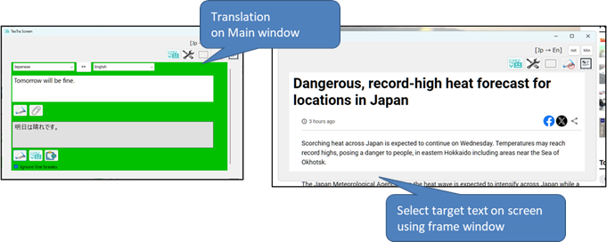
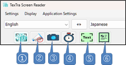
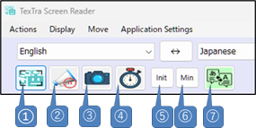
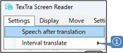
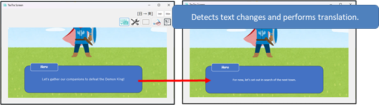
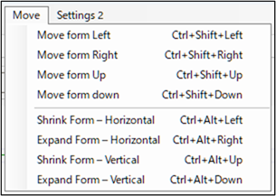

Main screen

Main window

① Frame translatrion
(Ctrl＋Shift+F1)
Reads, translates, and reads aloud the text
within the specified frame.
② Stops speech
playback.
③ Range Selection Translation (Ctrl +
F9)
Translates the text within the selected area of the
screen.
④ Monitoring translation
(Ctrl＋Shift+F2)
It reads and translates the text within the
frame at regular intervals.
(See the “Monitoring
Translation” section)
⑤ Open frame
window.
⑥ Open translation log form.
Frame window

① Same with ① on main
window.
② Same with ② on main
window.
③ Same with ③ on main
window.
④ Same with ④ on main
window.
⑤ Restores the form size to its default state.
⑥ Resize the form to its minimum
size.
⑦ Open main window.
Settings

① Configure automatic text retrieval and
translation at regular intervals.
Set the time interval
for reading text.
Automatically perform translation when
the text has changed.

Form Relocation
Press Ctrl + F10 to move the
frame window so that it surrounds the text at the current cursor position.
You can also restore the form from its minimized
state.
Frame window, Movement &
Resizing
Use Ctrl + Shift /Alt + Arrow Keys to adjust the
form's position and size.
